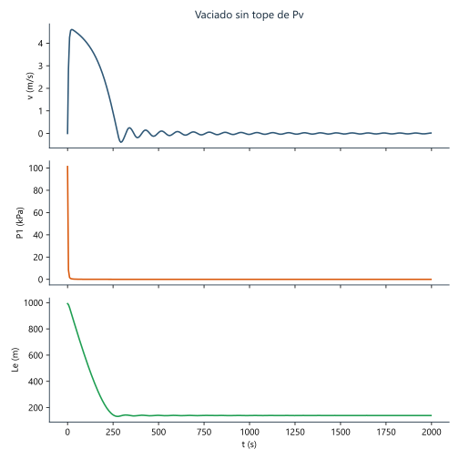
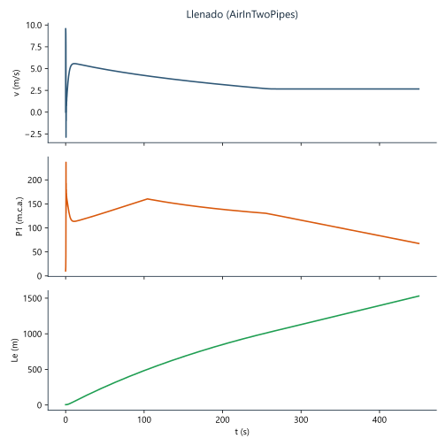

Resultados en cifras
Valores extremos de la simulación seleccionada.
Gráficas interactivas
Pasa el cursor sobre la curva para leer el valor en cada instante.
Animación del proceso
La tubería se anima con las series Le(t) y v(t) de la simulación.
Figuras estáticas
Versión SVG y PNG de cada caso, en docs/figuras.
Vaciado con Pv
Vaciado sin Pv

Llenado

Qué hace la app
Dos procesos
Vaciado y llenado con un selector; el vaciado admite el caso crítico sin tope de presión de vapor.
Parámetros editables
Diámetro, longitud, pendientes, coeficiente K y tiempo de parada, con valores por defecto restaurables.
Exportación
Datos en CSV o XLSX y gráficas en PNG, SVG o PDF, con botones de icono.
Base científica
El modelo de llenado con bolsa de aire y columna rígida procede de la tesis de maestría:
Ortega Heredia, A. H. (2026). Understanding starting-up operation in pressurised systems: mathematical and machine learning models. Tesis de M.Sc. en Ingeniería Civil, Universidad de Cartagena, Colombia. Director: Ph.D. Óscar E. Coronado-Hernández.
Publicación derivada: Designs 2026, 10, 39. DOI 10.3390/designs10020039.